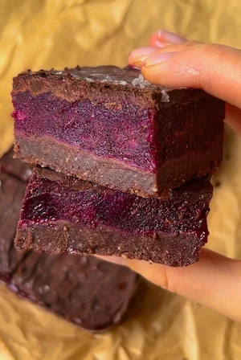

No Bake Blueberry Chocolate Bars (chewy chocolate base, homemade blueberry jam and dark chocolate top)
these no bake blueberry chocolate bars were one of my first recipes to go viral, so they have a very special place in my heart. i'm so happy that so many of you loved them and they are still one of my favourite satisfying no bake desserts. they literally have a little bit of everything: we have the chocolatey chewy base, then the homemade blueberry jam topped with dark chocolate for added crunch and a sprinkle of salt to balance out the sweet. every single element works so well together, and the cold-from-the-freezer texture makes them the most refreshing summer treat. these blueberry chocolate bars always end up in my no bake summer sweet treat rotation.
let's start with the base because it sets the whole thing up. the idea for this base came from my no bake brownie batter bars which are another viral hit, so if you loved those then these blueberry chocolate bars are your next (no) bake. all you need is almond flour and cacao powder blended with maple syrup, which comes together into this chewy and chocolatey layer that is so satisfying on its own. a food processor is the best way to make this base, although it might work in a high-powered blender, just make sure to scrape the sides as you go. you can also opt for the traditional bowl and spoon method but it requires a lot of arm work and a bit more time! the almond flour gives these bars that dense, soft texture that holds together really well once frozen and, because of its naturally high healthy fat content, it makes the dough super pliable with just a few ingredients. the cacao powder brings all the chocolate flavour. cacao is less processed than regular cocoa powder and retains more of its natural antioxidant and flavonoid content, which makes it a more nutritious option while still giving you that rich, intense chocolate hit. you can of course substitute the cacao for cocoa powder, though it may just be a touch less rich. use 3 tablespoons of maple syrup for a less sweet base or 4 if you like things a little sweeter or the dough needs help holding its shape. and please press the base layer down really firmly into your lined container, as it helps everything hold together cleanly when you come to slice it and it's the foundation for the rest of the layers.
the blueberry chia jam is the best part… fresh blueberries, a little maple syrup, chia seeds and a splash of water go into a saucepan together and simmer until the berries lose their shape and everything becomes thick and jammy. it's basically just homemade blueberry jam, which is way nicer than store-bought and a little more magical lol. the chia seeds help the jam set naturally by absorbing the liquid as it cooks down, as well as adding a nice fibre boost. the arrowroot powder (or tapioca starch) is stirred in at the end to thicken everything further and give the jam that glossy, set quality that slices cleanly. you want the jam to be well reduced, letting it simmer on low so most of the liquid evaporates, to make sure it isn't too runny, as otherwise it won't set properly on top of the base layer. the maple syrup amount is intentionally flexible because blueberries can vary quite a lot in sweetness depending on the season and where they're from. taste the jam as it cooks and add more if your berries are on the tart side. one thing to remember: let the jam cool completely before pouring it over the base. a warm jam will soften the base layer and ruin the texture! also note that as the bars thaw, the jam will naturally loosen a little, so if you don't like that texture, just increase the amount of arrowroot and/or chia seeds.
the dark chocolate top is simple but it makes such a difference to the overall bars. adding a little coconut oil to the melted chocolate helps it spread more smoothly over the frozen jam layer and helps it set better. i use a 70% dark chocolate here because the slight bitterness balances the sweetness of the blueberry jam layer so well. at this percentage, dark chocolate is also rich in flavonoids (plant compounds with antioxidant and anti-inflammatory properties), but you can reduce or increase the percentage to match your preference. the last step is the sea salt sprinkle, which in my opinion is completely non-negotiable. it just helps round out all the sweet flavours.
your end result is a beautiful cross section of dark chocolate, vibrant purple blueberry jam and chocolatey base that looks as good as it tastes. these are best eaten cold, straight from the freezer or after a few minutes at room temperature if you prefer the jam layer slightly softer. they feel like a really indulgent treat but are made entirely with wholefood ingredients, which is always the goal.
a little nutrition science for ya: blueberries are one of the most antioxidant-rich fruits you can eat, and most of that comes down to their anthocyanins, the pigment compounds responsible for that deep blue-purple colour. anthocyanins have been well studied for their anti-inflammatory effects and their role in supporting brain health, heart health and blood sugar balance. the cacao powder in the base is one of the richest plant sources of magnesium around, a mineral that supports muscle function, sleep quality and nervous system regulation, and one that a lot of us are quietly deficient in. the chia seeds in the jam bring a dose of plant-based omega-3 fatty acids, another key anti-inflammatory nutrient, as well as extra fibre to support gut health. and the almond flour adds vitamin E, a fat-soluble antioxidant that helps protect cells from oxidative stress. so while this is absolutely a dessert first and foremost, the ingredients are really pulling their weight nutritionally in a way that processed desserts could never!
these bars keep really well in an airtight container in the freezer for up to a month, making them such a great batch recipe to prep ahead and have on standby all summer. you can also store them in the fridge for up to a week if you prefer a slightly softer texture throughout. i personally love them straight from the freezer on a warm day. feel free to cut the bars slightly smaller too, as although this is a small batch recipe, the bars are thick and very satisfying.
if you love a no bake bar situation, you have to try my matcha ganache bars or my viral no bake lemon bars :)
Frequently Asked Questions
What size container or tin should I use?
A small square or rectangular container works best. This is a small batch recipe so a smaller container is needed. I use a glass food storage container, which also doubles as a great place to store the bars! I just pop on the lid and place it back in the freezer. The exact size isn't critical, but a smaller container gives you thicker, more substantial bars and a larger one will give you thinner ones that are more like a chocolate bark.
How should I store these no bake blueberry chocolate bars?
Store in an airtight container in the freezer for up to one month. They can also be kept in the fridge for up to 3 days if you prefer a slightly softer texture. They're best eaten cold and are particularly refreshing straight from the freezer on a warm day.
Can I use frozen blueberries instead of fresh?
Yes, frozen blueberries work well for the jam layer, although fresh blueberries will give you a more vibrant colour and slightly better jammy texture. Frozen is a perfectly good option, especially outside of blueberry season. You have two options: 1) thaw them first and drain any excess liquid before adding to the saucepan, as too much extra water can make the jam too thin and harder to set properly. 2) use them straight from the freezer and reduce the jam for longer to evaporate the extra water, and you may also need to increase the binders (chia seeds and/or arrowroot powder).
What is arrowroot powder and can I substitute it?
Arrowroot powder is a natural starch used to thicken sauces and jams. It gives the blueberry layer a glossy, smooth finish and helps it set. Tapioca starch is a direct substitute and works exactly the same way. Cornstarch also works well; use the same amount. If you don't have any of these, the chia seeds alone will help the jam thicken, it just won't be quite as firm or glossy.
Why is my base layer crumbly and not holding together?
This usually means you need a little more maple syrup to bind everything. Add an extra tablespoon, blend again, and check the texture. The dough should feel moist and hold together when pressed between your fingers, but it won't bind into a ball in the food processor. If it still feels dry but the batter is sweet enough, add in a tablespoon of your favourite nut or seed butter. Pressing it down very firmly in the container also makes a big difference to how well it holds.
Why didn't my homemade blueberry jam set properly?
If the jam is still quite liquid after freezing, it may not have been cooked down long enough, or the arrowroot powder wasn't fully mixed in before the jam cooled. The jam should be noticeably thick and almost paste-like before you pour it over the base. If yours is too runny, return it to the saucepan and cook on a low heat for a few more minutes until it thickens. It will also thicken more as it cools and sets in the freezer.
Are these blueberry chocolate bars vegan?
Yes, as long as you use a dairy-free dark chocolate they are completely vegan. Most 70% dark chocolate is naturally dairy-free but always check the label if you need to be sure, especially if you're avoiding cross-contamination.
Are these blueberry chocolate bars gluten-free?
Yes! Almond flour, cacao powder, blueberries and arrowroot powder are all naturally gluten-free. Just double check the label on your dark chocolate and arrowroot powder to make sure there's no cross-contamination if you have coeliac disease or a high sensitivity.
Pro Tips
- Press the base layer down really firmly and evenly using your fingers or the back of a spoon, then finish with a spatula for a smooth, level surface.
- Let the jam cool completely to room temperature before pouring it over the base layer, as a warm jam will soften the base and ruin the texture.
- Use fresh blueberries for the best colour and jammy flavour. If you only have frozen, reduce the jam for longer since frozen berries hold more water.
- Use a hot knife to slice the bars cleanly if cutting straight from the freezer. Run the knife under hot water, dry it, then slice.
No Bake Blueberry Chocolate Bars

Ingredients
- Base Layer
- Blueberry Jam Layer
- Top Layer
Instructions
- Step 1: Add the blueberries, maple syrup, chia seeds and a splash of water to a saucepan and bring to a boil.
- Step 2: Reduce the heat and simmer until the berries lose their shape. Stir in the arrowroot powder, mix well and set aside to cool completely.
- Step 3: In a food processor, blend the almond flour, cacao powder and maple syrup until combined into a fudgy dough that you can shape with your hands.
- Step 4: Line a small container or tin with baking paper. Press the base layer firmly and evenly, starting with your hands and finishing with a spatula for an even result.
- Step 5: Pour the cooled jam over the base and place in the freezer for a few hours or overnight until set.
- Step 6: Melt the dark chocolate with the coconut oil and spread over the set jam layer. Work fast as the chocolate sets quickly!
- Step 7: Sprinkle with sea salt. If the chocolate hasn't fully set, return to the freezer until it is.
- Step 8: Slice and enjoy cold!
Nutrition Facts
Per one bar (based on 6 bars):
*Nutritional information is estimated and will vary depending on the ingredients and brands you use. Basic macros don't reflect the full nutritional value including vitamins, minerals, antioxidants, and other beneficial compounds. Please use this as a guideline only.